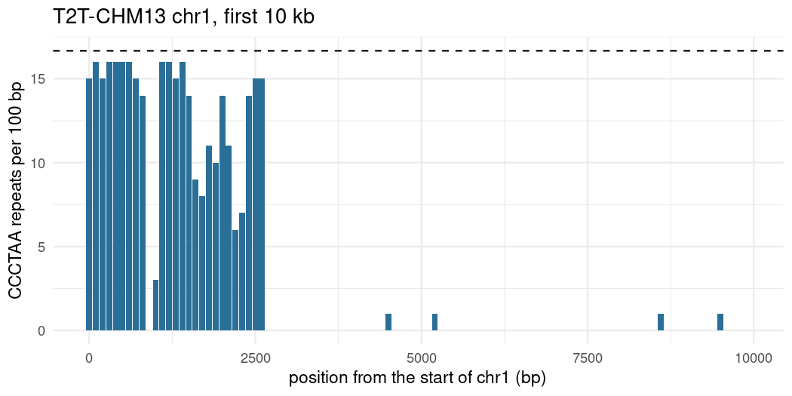
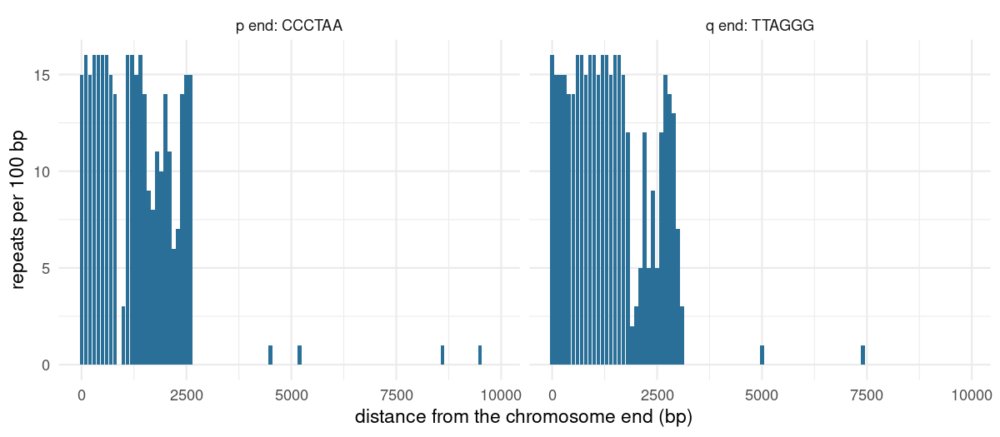

Exercise in R: the eukaryotic chromosome
Goal
By the end of this exercise you should be able to:
- read a FASTA file into one string, and count a motif in it with
str_count; - cut a sequence into windows with
str_suband count a motif in each, to see where along a sequence the motif is dense; - use this to find where the telomere ends on a real human chromosome, and check the result against a shuffled control.
Before you start
This page builds on the Exercise, especially B9 (why one chromosome end reads CCCTAA and the other TTAGGG). You need the packages dplyr, ggplot2 and stringr.
Download the two data files into a folder data/ next to your script or R Markdown file:
data/chm13_chr1_pter_10kb.fa: the first 10 kb of chromosome 1;data/chm13_chr1_qter_10kb.fa: the last 10 kb of chromosome 1;data/README.mdsays where they come from.
Both are real sequence from the complete human genome T2T-CHM13 v2.0 (UCSC genome hs1), downloaded on 2026-11-20 through the UCSC REST API, for example https://api.genome.ucsc.edu/getData/sequence?genome=hs1;chrom=chr1;start=0;end=10000. Each file is the top strand of the reference, read 5’ → 3’ from the p end of the chromosome towards the q end.
library(dplyr)
library(ggplot2)
library(stringr)Tasks
You already know the stringr functions str_sub (cut out part of a string), str_count (count matches of a pattern) and reading FASTA files by hand, from Parts 3 and 4. This unit’s new idiom is counting in windows: make a table with one row per window start, cut out each window with str_sub, and count in each window with str_count. Because both functions work on whole vectors, one mutate does all the windows at once, without a loop.
R1. (read the sequences) Write a function read_fasta_seq(path) that reads a one-record FASTA file and returns the sequence as a single string. Read both files. Check the header line and the lengths, and print the first 60 bases of the p end and the last 60 bases of the q end.
read_fasta_seq <- function(path) {
lines <- readLines(path)
paste(lines[-1], collapse = "") # drop the header line, glue the rest together
}
pter <- read_fasta_seq("data/chm13_chr1_pter_10kb.fa")
qter <- read_fasta_seq("data/chm13_chr1_qter_10kb.fa")
readLines("data/chm13_chr1_pter_10kb.fa", n = 1)
nchar(pter)
nchar(qter)
str_sub(pter, 1, 60)
str_sub(qter, -60, -1)R2. (count the repeats) Count TTAGGG and CCCTAA in each 10-kb sequence with str_count. Which motif dominates at which end? Explain with B9.
tibble(end = c("p end (start of chr1)", "q end (end of chr1)"),
TTAGGG = str_count(c(pter, qter), "TTAGGG"),
CCCTAA = str_count(c(pter, qter), "CCCTAA"))R3. (repeat density in windows) Cut the p-end sequence into 100-bp windows, count CCCTAA in each, and plot the counts along the sequence. A window made only of telomere repeats holds 100/6 ≈ 16.7 repeats; draw that as a dashed line. Where does the telomere end? Use the rule “a window with at least 8 repeats is telomeric” and find the last such window.
win <- 100
windows <- tibble(start = seq(1, nchar(pter), by = win)) |>
mutate(window = str_sub(pter, start, start + win - 1),
repeats = str_count(window, "CCCTAA"))
windows |> select(start, repeats) |> slice(24:30)
windows |> filter(repeats >= 8) |> summarise(last_start = max(start))
ggplot(windows, aes(x = start, y = repeats)) +
geom_col(fill = "#2a6f97", width = win * 0.9) +
geom_hline(yintercept = win / 6, linetype = "dashed") +
labs(x = "position from the start of chr1 (bp)",
y = "CCCTAA repeats per 100 bp",
title = "T2T-CHM13 chr1, first 10 kb") +
theme_minimal()R4. (a gap inside the telomere) Your plot has a dip to almost zero around position 900–1100, inside the telomere. Look at that stretch with str_sub(pter, 880, 1000). Which slightly different repeat is there? Count it per window and in total.
str_sub(pter, 880, 1000)
windows <- windows |> mutate(variant = str_count(window, "CCCTCA"))
windows |> select(start, repeats, variant) |> slice(8:12)
sum(windows$variant)R5. (both ends) Put the window counting into a function count_windows(seq, motif, win = 100). Use it for CCCTAA at the p end and TTAGGG at the q end, measure positions as distance from the chromosome end, and plot the two ends side by side with facet_wrap. Estimate how far each telomere reaches into the chromosome.
count_windows <- function(seq, motif, win = 100) {
tibble(start = seq(1, nchar(seq), by = win)) |>
mutate(repeats = str_count(str_sub(seq, start, start + win - 1), motif))
}
both <- bind_rows(
count_windows(pter, "CCCTAA") |> mutate(end = "p end: CCCTAA", from_end = start - 1),
count_windows(qter, "TTAGGG") |> mutate(end = "q end: TTAGGG", from_end = nchar(qter) - (start + 99))
)
both |>
group_by(end) |>
summarise(telomere_windows = sum(repeats >= 8),
reaches_bp = max(from_end[repeats >= 8]) + 100)
ggplot(both, aes(x = from_end, y = repeats)) +
geom_col(fill = "#2a6f97", width = 90) +
facet_wrap(~ end) +
labs(x = "distance from the chromosome end (bp)", y = "repeats per 100 bp") +
theme_minimal()R6. (is it chance?) How many times would CCCTAA turn up in 10 kb of random sequence? Shuffle the bases of the p-end sequence with sample() (this keeps the base composition but destroys the order) and count again. Compare with the rough expectation 10 000 / 46, which assumes all four bases are equally common.
set.seed(1)
bases <- str_split(pter, "")[[1]]
table(bases)
shuffled <- paste(sample(bases), collapse = "")
str_count(shuffled, "CCCTAA")
nchar(pter) / 4^6Solutions
All output below is from Rscript --vanilla run in the unit folder.
R1.
[1] ">hs1_chr1:1-10000 T2T-CHM13v2.0 (UCSC hs1) via api.genome.ucsc.edu getData/sequence, downloaded 2026-11-20"
[1] 10000
[1] 10000
[1] "CACCCTAAACCCTAACCCCTAACCCTAACCCTAACCCTAACCCTAACCCTAACCCCTAAA"
[1] "AGGGTTAGGGTTAGGGTTAGGGTTAGGGTTAGGGTTAGGGTTAGGGTTAGGGTTAGGGTT"The p end starts with CCCTAA repeats (with a few irregular ones, CCCCTAA and CCCTAAA); the q end finishes with a clean run of TTAGGG.
R2.
# A tibble: 2 × 3
end TTAGGG CCCTAA
<chr> <int> <int>
1 p end (start of chr1) 1 361
2 q end (end of chr1) 419 2CCCTAA dominates at the p end and TTAGGG at the q end. They are the same telomere repeat seen from opposite strands: the reference strand runs away from the p end (so we read the C-rich strand there) and towards the q end (the G-rich strand). 361 repeats × 6 bp ≈ 2.2 kb and 419 × 6 ≈ 2.5 kb of perfect repeats.
R3.
# A tibble: 7 × 2
start repeats
<dbl> <int>
1 2301 7
2 2401 14
3 2501 15
4 2601 15
5 2701 0
6 2801 0
7 2901 0
# A tibble: 1 × 1
last_start
<dbl>
1 2601
The windows are almost full of repeats (14–16 of a possible 16.7) up to position 2700, then drop to zero at once. The p-end telomere of chromosome 1 in CHM13 is about 2.7 kb long. Beyond it, only an occasional single CCCTAA appears, about what chance predicts (R6). The sharp edge is the boundary between the telomere and the subtelomeric sequence of the chromosome.
R4.
[1] "CCCTAACCCTCACCCTCACCCTCACCCTCACCCTCACCCTCACCCTCACCCTCACCCTCACCCTCACCCTCACCCTCACCCTCACCCTCACCCTCACCCTCACCCTCACCCTCACCCTCAC"
# A tibble: 5 × 3
start repeats variant
<dbl> <int> <int>
1 701 15 0
2 801 14 2
3 901 0 16
4 1001 3 12
5 1101 16 0
[1] 31The gap is a run of the variant repeat CCCTCA (TGAGGG on the other strand), 31 copies in a row. Telomeres, especially their inner parts, contain such variant repeats. Our counting with an exact pattern misses them, which is why the window count dips. A window count is only as good as the pattern you search for.
R5.
# A tibble: 2 × 3
end telomere_windows reaches_bp
<chr> <int> <dbl>
1 p end: CCCTAA 23 2700
2 q end: TTAGGG 25 3000
Both telomeres of chromosome 1 in this assembly are about 3 kb (2.7 kb at the p end, 3.0 kb at the q end), with variant or degenerate repeats in their inner part. That is at the short end of the range for human cells (a few kb up to about 15 kb). The reference is one assembly from one cell line, CHM13, and telomere length differs between cells, chromosome ends, tissues and people, and shortens with age. A real cell’s telomere length is a distribution, not a single number.
R6.
bases
A C G T
2999 3023 1722 2256
[1] 5
[1] 2.441406In the shuffled sequence, CCCTAA appears 5 times in 10 kb; the rough expectation for random sequence with equal base frequencies is 10 000 / 4096 ≈ 2.4 (it is a bit higher here because this stretch is rich in C and A). The real sequence has 361 copies, almost all packed into the first 2.7 kb. The telomere is clearly not chance.
Where this leads
Counting a motif in windows is a general tool: the same code finds CpG islands, satellite arrays or restriction sites along a sequence. In Rearrangements & aneuploidy (next), you work with probabilities of aneuploid gametes and simulate how a translocation carrier’s chromosomes segregate. In Organelle inheritance you return to rbinom and replicate to simulate the mitochondrial bottleneck.